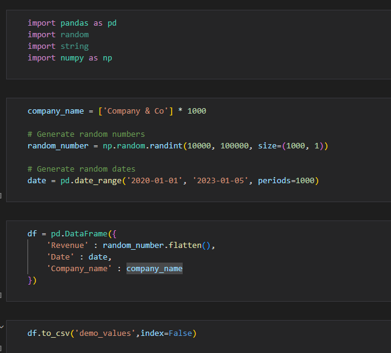
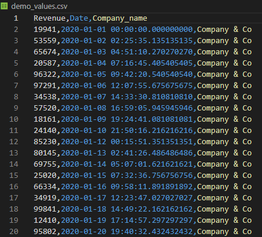

Project Plutus
"An investment in knowledge pays the best interest."
Introduction
An accounting dashboard is a tool that provides a visual representation of an organization's financial data and performance indicators. It offers a concise and easy-to-understand overview of key financial metrics, such as revenue, expenses, cash flow, and profit/loss, allowing business owners, managers, and accountants to monitor and analyze their company's financial health in real-time. By using an accounting dashboard, users can quickly identify areas that require attention, track progress toward financial goals, and make informed decisions based on accurate data. Overall, an accounting dashboard is a practical and essential tool for businesses of all sizes, providing a comprehensive view of financial performance and enabling better financial management.
Pre Dashboard Building
Before going into any dashboard building tool we must start off by analyzing the available data to better determine what KPIs are availble to us and what the end-user goal is.
Here our objective is to build a simple to understand acounting dashboard.
For privacy reasons there is, sadly, no publicly available accounting data of businesses so we will have to start by creating our own generated data set.
Generating A Basic Dataset
For the goal of this project we will be generating a simple data set with only the revenue as an available value:
Here is what the generated data looks like :
Dashboard Building
Here we will be using PowerBi and PowerQuery to build our dashboard. In an actual business we could have a lot of data cleaning to do to actually prepare the data for the dashboard.
Here since we have a simple dataset we can quickly build our dashboard after some quick measures and table relations.
Dashboard
After putting everything together we have here a simple and functional accounting dashboard. In a real life usage the dashbaord would be directly connected to data source and would always have the latest data to be able to make the best data driven decisions.
 Download link
Download link
Conclusion
In conclusion building an aestethic dashboard is important to keep the user engaged and to keep the data easily understandable. But dashboard building is not just about designing an aesthetically pleasing user interface, it also involves the crucial task of cleaning and preparing data to ensure that the information displayed is accurate, relevant, and usable. Inaccurate or incomplete data can lead to wrong conclusions and poor decision-making, which can be detrimental to a company's financial health. Therefore, data cleaning and preparation are critical steps in the dashboard building process that cannot be ignored. Only by ensuring that the data is accurate, complete, and properly structured can a dashboard provide the necessary insights for effective decision-making. Ultimately, investing time and effort in data preparation and cleaning will result in a more valuable and reliable dashboard, which can help businesses optimize their performance and achieve their financial goals.